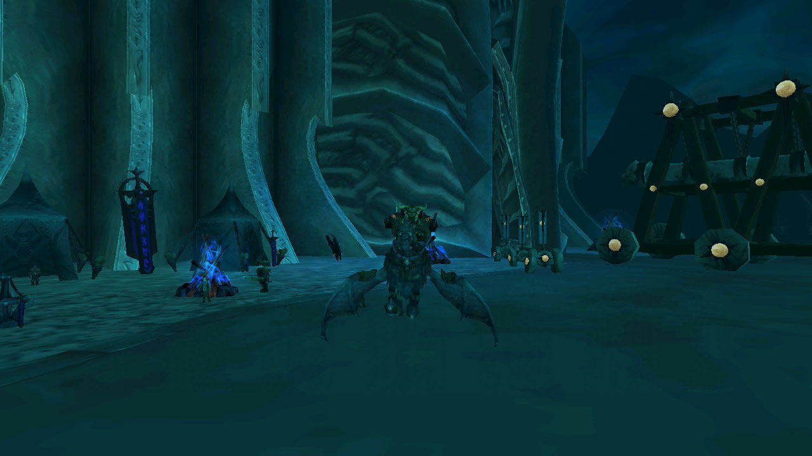
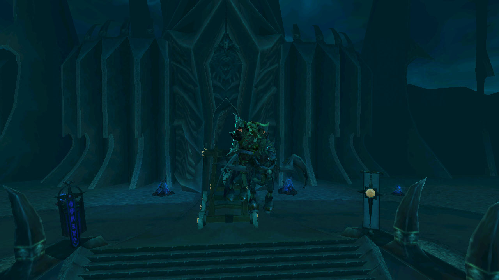

Invencible

Esta montura es "dropeada por el Rey Exanime" en la banda lider de la expansion Lich King, exatcamente en la dificultad de 25 jugadores heroico. Venciendo al rey Exanime podemos tener la suerte o no de obtener esta montura que le queda excelente a los caballeros de la muerte, sirvientes del rey exanime.
Esta montura fue la montura de la expansion y actualmente mucha gente continua "farmeandola" en el juego o lo ha hecho durante mucho tiempo sin suerte alguna debido a que la probabilidad de que salga es muy baja.
El rey exanime es el ultimo jefe de esta banda y por lo tanto se necesita mucho mas trabajo para acabar con el.
